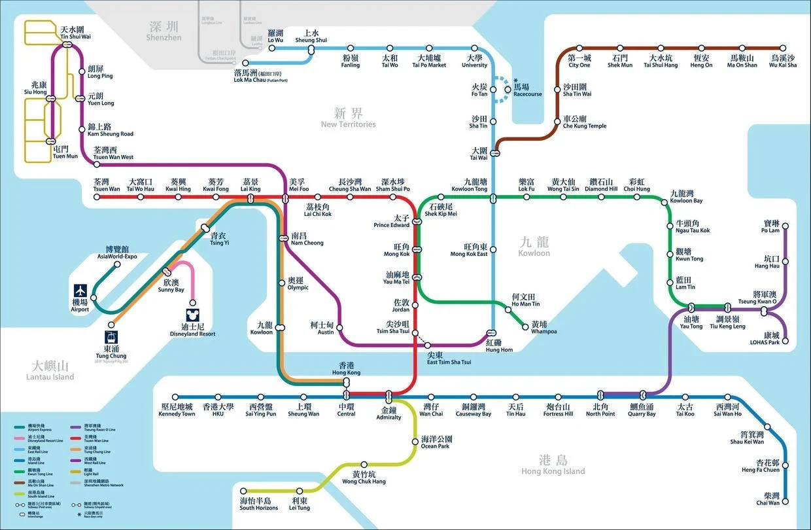

A1. 只乘坐地铁，找到从香港中环到旺角的最短路线。
借助地铁路线图，不难很快找到 A1 的可行解，这里也是唯一的最优解。下面就是原文那张图。点任意两个车站（第一下是起点，第二下是终点），或者用下面的选单。手机上地图可以左右滑动。

连“最短”都要先问一句指什么：时间、换乘还是站数？这是上一篇说的“标准”。不过在 A1 里，三种标准给出的都是同一条荃湾线。问题被约束得很紧，可能性空间很小。
A2. 找到从香港中环到旺角的最短路线，行动方式不限。
去掉地铁的限制，巴士、的士、渡轮、步行加游泳、直升机乃至多种混合，都在可能性空间之中。所谓开放问题，一部分含义就在于广阔的可能性空间。更棘手的是另一部分：可能性空间是会变化的。哪天发明了瞬间移动，它是不是也该算进去？
左边逐个放开交通方式，看可行的路线怎么变多；再回答下面几个原题里没说的问题，看空间怎么缩回来。路线都是真实存在的走法，地图按 OpenStreetMap 的海岸线描绘。
问题开放的根本原因是不完全的信息，来自两方面：问题本身，和问题解决者。A1 和 A2 其实都很模糊：只给了行动方式，没给可支配的资金；没说是“谁”去行动，他游泳多快；连“不限定行动方式”这个条件本身都是开放的。
右边那几个问题，就是原文的第二个策略：对问题本身提问题。向提出问题的人追问，增加显性的约束，空泛的问题就变得明确。问题的提出和解决因此不是单向的流水线，而是一个反馈、迭代的循环。
面对信息不完全，第一个策略是抓大放小。在 A2 里区分优劣最明显的特征是速度。从中环到旺角，精确到时速也太夸张了；我们只需要量级，再进一步，连量级都不需要，只要知道谁比谁快。这一连串的抓大放小能迅速缩小可能性空间，凭借的是我们脑中关于速度的先验知识。
调低精度，看看哪些比较还做得出来。
差距大的时候，量级甚至顺序就够用；差距小的时候，抓大放小会抓丢。地铁和的士都是“每小时几十公里”，只看量级就分不出来，这时要么回到更精确的信息，要么承认它们差不多，再换一个特征（比如会不会塞车）来比。
从问题提出者的角度，很多信息不完全的问题，要建立在和解决者共享这些先验知识的共识之上，换句话说就是用了隐含条件。共识用得好，省下许多沟通成本；用不好也可能是灾难：很多自以为的共识，其实并不是事实上的共识。
隐含条件可以联系到科学哲学里的波普尔可证伪性原则。整体论者指出：我们看到一个条件命题 p → q 时，它更完整的表述其实是 (p ∧ a1 ∧ a2 ∧ …) → q，a1、a2 都是隐含的前提。所以由 ¬q 推不出 ¬p，只能推出 ¬(p ∧ a1 ∧ a2 ∧ …)：证伪的是各条件的合式整体。
原文提到了海王星。下面是天文学史上形式完全相同、结局却相反的两次“证伪”。观察到 ¬q 之后，你会怀疑哪一个前提？
形式一模一样：理论 + 隐含前提 → 预测，预测落空。天王星那次，问题出在隐含前提“没有未知的行星”，于是找到了海王星；水星那次，同样的思路找来的“祝融星”并不存在，问题出在理论本身，最后由广义相对论解决。光看 ¬q，你没法知道该怪谁。
理想地讲，一种理论在形成时，是有能力、也必须把前提条件明确下来的。即使存在海王星这样预先没考虑到的隐含条件，也不是可证伪性本身的瑕疵（只是只能证伪整个理论的话，对科学发展的意义似乎大大减少了）。或许可以说，科学理论也需要尽量确保它讨论的问题不是开放的：理论越成熟，已明确的约束条件就越多。